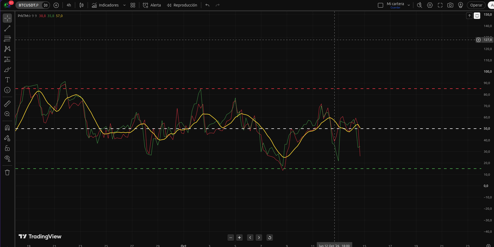

El indicador que alimenta la lectura de mercado del protocolo B.A.S. Un RSI que no espera al cierre de la vela: se recalcula en cada tick, en tiempo real, sustituyendo el High y el Low por el precio actual. Diseñado para operar en 4H y 1D.

El indicador se representa en un panel inferior con tres líneas: RSI High (rojo), RSI Low (verde) y SMA L/H (amarillo).
La clave del PrkTM☆ Dynamic está en cómo trata las velas en tiempo real. Mientras el RSI tradicional usa siempre el High y el Low de la vela, este indicador los sustituye por el precio actual (close) cuando la vela está viva. El resultado: tres líneas que reaccionan al instante, sin esperar al cierre.
En vela REALTIME: el dato actual de la serie
High se sustituye por close.
En vela REALTIME: el dato actual de la serie
Low también se sustituye por close.
Como close es el precio en cada tick, las líneas
roja y verde se recalculan continuamente:
subida, bajada o rebote actualizan al instante.
En velas históricas se conserva la lógica
original del RSI: RSI(high) y RSI(low).
RSI calculado sobre el High (o el close en vela viva). Representa la presión de compra en el extremo superior de cada vela.
RSI calculado sobre el Low (o el close en vela viva). Representa la presión de venta en el extremo inferior de cada vela.
Media móvil simple entre el RSI High y el RSI Low (50% / 50%). Es la línea de referencia que se usa como filtro de tendencia dentro de B.A.S.
La SMA amarilla cruzando al alza el nivel 50 suele confirmar tendencia alcista. Cruzando a la baja, tendencia bajista. El indicador nunca decide por ti: filtra.
Copia y pega este código directamente en el editor Pine de TradingView para tener el indicador funcionando en tu gráfico.
//@version=6
indicator(title="PrkTM☆ Dynamic", shorttitle="PrkTM☆", overlay=false)
// Parámetros
rsi_period = input.int(9, title="Periodo del RSI", minval=1)
sma_period = input.int(9, title="Periodo de la SMA", minval=1)
// ============================================================
// PRKTM DINÁMICO INTRABAR
// ============================================================
// En una vela REALTIME:
// - el dato actual de la serie High se sustituye por close
// - el dato actual de la serie Low se sustituye por close
//
// close = precio actual en cada tick de la vela.
//
// Por tanto, rojo y verde se recalculan continuamente:
// subida → actualizan
// bajada → actualizan
// rebote → actualizan
// sin esperar al cierre.
//
// En velas históricas se conserva la lógica original:
// RSI(high) y RSI(low).
// ============================================================
float highSource = barstate.isrealtime ? close : high
float lowSource = barstate.isrealtime ? close : low
// RSI High dinámico
float rsi_high = ta.rsi(highSource, rsi_period)
// RSI Low dinámico
float rsi_low = ta.rsi(lowSource, rsi_period)
// ============================================================
// AMARILLA — SIN CAMBIOS EN SU LÓGICA
// ============================================================
float sma_rsi_high = ta.sma(rsi_high, sma_period)
float sma_rsi_low = ta.sma(rsi_low, sma_period)
float rsi_sma_lh = (sma_rsi_high * 0.5) + (sma_rsi_low * 0.5)
// ============================================================
// GRÁFICOS
// ============================================================
plot(rsi_high, title="RSI High", color=color.red, linewidth=1)
plot(rsi_low, title="RSI Low", color=color.green, linewidth=1)
plot(rsi_sma_lh, title="RSI SMA L/H", color=color.yellow, linewidth=2)
// ============================================================
// NIVELES
// ============================================================
hline(85, "Sobrecompra", color=color.red, linewidth=2)
hline(50, "Nivel Medio", color=color.white, linewidth=2)
hline(15, "Sobreventa", color=color.green, linewidth=2)El indicador es open source. Puedes copiarlo, modificarlo y adaptarlo a tu operativa.
El PrkTM☆ Dynamic no es un indicador de entrada directa. Es el filtro de tendencia que determina si el protocolo permite abrir longs, shorts o quedarse fuera.
Si el PrkTM☆ Dynamic no confirma la dirección de la tendencia principal, no se opera. Sin excepciones.